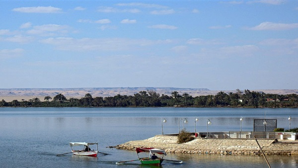

جمهورية مصر العربية
مصر "رسميا جمهورية مصر العربية" هي دولة عربية تقع في الركان الشمالي الشرقي من قارة أفريقيا و تمتد في قارة اسيا حيث تقع شبه جزيرة سيناء داخل قارة اسيا، يبلغ عدد سكان مصر 104 مليون لتكون في الترتيب الثالث عشر عالميا من حيث عدد السكان والاول عربيا، ولجمهورية مصر العربية سوحال طويلة على البحر الاحمر والمتوسط، تشترك بحدود مع سبعة دول، تبلغ مساحتها تقريبا 1,002,000 كيلومتر مربع وتبلغ المساحة المأهولة 78,990 كيلومتر مربع بنسبة 7.8% من اجمالي مساحة مصر. تقسم مصر اداريا الى 27 محافظة، تنقسم كل محافظة الى مراكز او اقسام.يتركز أغلب سكان مصر في وادي النيل وفي الحضر، يشكل وادي النيل والدلتا أقل من 4% من اجمالي مساحة مصر أي تقريبا 33,000 كيلومتر مربع، تعتبر القاهرة الكبرى هي أكبر الكتل السكانية التي تمثل تقريبا ربع سكان مصر تليها الاسكندرية، كما يعيش أغلب السكان الباقين في الدلتا وعلى ساحلي البحر الاحمر والبحر المتوسط ومدن قناة السويس وتشغل هذه المناطق مساحة 40 الف كيلومتر مربع، بينما تشمل الصحراء غير المعمورة غالبية مساحة مصر.
تُعتبر مصر أرشيفاً تاريخيَّاً عالميّاً للحضارات؛ حيثُ قامت على أرضها أقدم الحضارات العالميّة منذُ عام 3200 قبل الميلاد. وتطور أهلها سريعًا وبدأت فيها صناعات بسيطة وتطور نسيجها الاجتماعي المترابط، وكوّنوا إمارات متجاورة مسالمة على ضفاف النيل تتبادل التجارة، سابقة في ذلك كل بلاد العالم. وكان التطور الطبيعي لها أن تندمج مع بعضها البعض شمالًا وجنوبًا وتوحيد الوجهين القبلي والبحري وبدأ الحكم المركزي الممثل في بدء عصر الأسرات "نحو 3000 سنة قبل الميلاد". وتبادلت التجارة مع جيرانها حيث تعد مصر من اوائل الدول التجارية. وكان لاختراع الكتابة في مصر أثرا كبيرا على مسيرة الحياة في البلاد وتطورها السريع، كذلك شهدت مصر القديمة تطورا في مجالات الطب والهندسة والحساب.
تواكبت على مصر العديد من العصور التاريخية، مرورا بالفرس "343 قبل الميلاد" ثم قدوم الاسكندر الأكبر "323 قبل الميلاد" والذي تأسست بعده الدولة البطلمية، وبعدها غزاها الرومان "31 قبل الميلاد" وظلت تحت حكمهم 600 عام. وفي فترة حكم الرومان شهدت مصر ظهور المسيحية وانتشارها في مصر، وبعدها جاء الفتح الإسلامي "نحو 639 بعد الميلاد" وتحولت مصر الى دولة اسلامية. وتأسست في مصر العديد من الدول مثل: الدولة الطولونية ثم الإخشيدية ثم الفاطمية ثم الأيوبية ثم المماليك، وبعدها أصبحت تحت حكم العثمانيين حتى عام 1914 عندما أعلنت السلطنة، ثم تحولت إلى مملكة (1922)، ثم تحولت بعد ذلك إلى جمهورية (1954). تشتهر مصر بالعديد من الاثار حيث يوجد بها ثلث اثار العالم، مثل أهرامات الجيزة وأبي الهول، ومعبد الكرنك والدير البحري ووادي الملوك وآثارها القديمة الأخرى، مثل الموجودة في مدينة منف وطيبة والكرنك، ويُعرض بعض من هذه الآثار في المتاحف الكبرى في جميع أنحاء العالم. وقد وجد علم خاص بدراسة آثار مصر سمي بعلم المصريات، وكذلك هناك الآثار الرومانية والإغريقية والقبطية والإسلامية بمختلف عصورها.
تعد اللغة المصرية القديمة أحد أقدم لغات العالم واستمرت أكثر من 3000 سنة، اخترع المصريون القدماء الكتابة الهيروغليفية. تعد اللغة الرسمية في مصر هي اللغة العربية، والدين الرسمي وفقا للدستور هو دين الأسلام، ونظام الحكم فيها جمهوري ديمقراطي. تعد مصر من الأعضاء المؤسسين لجامعة الدول العربية ويوجد بها المقر الرئيسي لها، كذلك تعد من الأعضاء المؤسسين للأمم المتحدة حيث انضمت لها عام 1945، بالإضافة إلى عضويتها بالاتحاد الأفريقي، وكذلك تعد مصر عضوًا في العديد من الاتحادات والمنظمات الدولية، ولديها العديد من العلاقات الدبلوماسية مع أغلب دول العالم. في 2016، أخذت مصر مركز جنوب أفريقيا لتصبح ثاني أكبر اقتصاد في إفريقيا (بعد نيجيريا).
أصل التسمية
الأسماء التي تعرف بها في لغات أوربية عديدة مشتقة من اسمها في اللاتينية إجبتوس Aegyptus المشتق بدوره من اللفظ اليوناني أيجيبتوس Αίγυπτος، الذي يرجع إلى وحي خيال هوميروس في أسطورته التي ألفها في وقت يقع بين عامي 1600 و1200 قبل الميلاد، وأطلق البطالمة لفظ "إيجيبتوس" على مصر وسكانها من وحي أسطورة هوميروس المشار إليها. فقد أطلق الإغريق اسم آيجوبتوس على النيل وأرض النيل في آن واحد، ثم قصروه على مصر نفسها، وكتبه الرومان بعدهم آيجيبتوس، ولعل أقرب المسميات المصرية المحتملة إلى اسم آيجوبتوس ومشتقاته هو اسم آجبي ومترادفاته آجب وآجبة، وإجب وإكب، وكانت كلها مترادفات رمزت المتون المصرية بها إلى الماء الأزلي الذي برزت الأرض منه، وإلى النيل والفيضان ورب الفيضان، وربما إلى الأرض المغمورة بالفيضان أيضًا، وذلك على نحو ما عبر الإغريق باسم آيجوبتوس في العصور المتأخرة عن النيل وأرض النيل معًا، بعد أن حوروا كتابته إلى ما يتفق مع نطقهم له وبعد أن أضافوا في نهايته حرفي الواو والسين اللذين اعتادوا على إضافتهما إلى نهاية أغلب مسمياتهم.
العلم
استخدم المصريون الأعلام منذ آلاف السنين قبل توحيد القطرين. تغير العلم المصري عدة مرات مع تغير الأحداث والنظام السياسي، خاصةً في العصر الحديث ما بين الخديوية إلى السلطنة إلى المملكة ثم الجمهورية، حتى استقر العلم الحالي في عام 1984 بموجب القانون رقم 144. ويتكون من ثلاثة مستطيلات عرضيّة متساوية الأبعاد، ومكونًا مستطيل الشكل عرضه ثُلثا طوله، وهي بحسب ترتيب الألوان من الأعلى للأسفل: اللون الأحمر يدل على الإشراق والأمل والقوة، والأبيض تعبيرًا عن النقاء والسلام، والأسود يعبر عن عصور الاستعمار التي تخلصت منها مصر، في وسط المستطيل الأوسط نسر صلاح الدين وهو النسر المصري وهو من الطيور القوية بلون ذهبي وينظر ناحية اليمين ويعبر عن قوة مصر وعراقة حضاراتها. ومكتوب على قاعدته "جمهورية مصر العربية" بالخط الكوفي.أعلام مصر خلال القرن العشرين حتى الآن:
1881 - 1914م
.svg)
1914 – 1922م
.svg)
1922 – 1958م
.svg)
1958 – 1972م
.svg)
1972 – 1984م
.svg)
1984م - حتى الأن
النشيد الوطني
أول سلام وطني مصري معروف هو السلام الملكي المصري من تأليف الموسيقار الإيطالي العالمي الشهير فيردي، الذي بدأ عزفه في عام 1869 في عهد الخديوي إسماعيل. ولم تكن له كلمات لأن السلام الوطني لأي دولة يعزف بدون كلمات.بعد ذلك، أصبح "نشيد اسلمي" يا مصر، من تأليف مصطفى صادق الرافعي وألحان سفر علي، هو النشيد الوطني من عام 1923 إلى عام 1936. ويستخدم هذا النشيد الآن نشيدًا لكلية الشرطة في مصر. ثم أعاد الملك فاروق السلام الملكي المصري الذي لحنه فيردي بعد اعتلائه العرش عام 1936 واستمر حتى عام 1952. ومع إنهاء الملكية في 1952 وقيام ثورة الضباط الأحرار ألغى العمل بهذا النشيد وتم تبنّي نشيد الحرية من ألحان محمد عبد الوهاب وكلمات الشاعر كامل الشناوي والذي مطلعه "كنت في صمتك مرغم"، وقد استعمل هذا النشيد كجزء من نشيد الجمهورية العربية المتحدة بعد الوحدة مع سوريا سنة 1958 ولا يزال لحنه مستعملا إلى اليوم لنشرة أخبار إذاعة صوت العرب بالقاهرة.
وفي سنة 1960 صدر القرار الجمهوري رقم 143 باتخاذ سلام وطني جديد هو المؤسس على لحن كمال الطويل لنشيد والله زمان يا سلاحي من كلمات الشاعر صلاح جاهين لأم كلثوم وهو النشيد الذي نال شعبية كبيرة في عام 1956 خلال ظروف العدوان الثلاثي على مصر، ولم تكن هناك كلمات مصاحبة للحن، لذا كان يطلق عليه اسم "السلام الجمهوري" وليس النشيد الجمهوري. وخلال الفترة التي استخدم فيها لحن "والله زمان يا سلاحي" كسلام وطني لمصر أجري عليه تعديلان: الأول بالقرار الجمهوري رقم 1854 لسنة 1974 بالاكتفاء بعزف الجزء الأول منه فقط، والثاني بالقرار الجمهوري رقم 1158 لسنة 1975 بالعودة إلى عزف السلام الجمهوري بالكامل كما كان منذ عام 1960.
ظل لحن "والله زمان يا سلاحي" هو السلام الجمهوري حتى عام 1979. وقد استعمله العراق أيضا كنشيد وطني في الفترة من 1965 حتى 1981 والتي كانت تطمح إلى تكوين دولة عربية موحدة من مصر و العراق.
في عام 1979 صدر القرار الجمهوري رقم 149 بتعديل السلام الجمهوري لجمهورية مصر العربية إلى نشيد بلادي بلادي الذي كتبه الشيخ يونس القاضي (متأثراً بكلمات لمصطفى كامل) ولحنه سيد درويش وأعاد توزيعه الموسيقار المصري محمد عبد الوهاب. ثم في ديسمبر 1982 صدر القرار الجمهوري رقم 590 والذي نص في مادته الأولى على أن "يراعى أن تصاحب كلمات المقطع الأول من نشيد "بلادي بلادي" النوتة الموسيقية في جميع الاحتفالات الشعبية والوطنية، وأن يقتصر السلام الوطني على عزف النوتة الموسيقية بغير نشيد في حالة استقبال الرؤساء والوفود الأجنبية، وفي غير ذلك من الأحوال التي تقتضي عزفه مع السلام الوطني لدولة أجنبية".
تاريخ النشيد الوطني
كلمات نشيد "اسلمي يا مصر":
اسلمي يا مصـرُ إنـنـي الـفِـدا ذي يــدي إن مــدَّتِ الــدنـيـا يـدا
أبـــدًا لـــن تــسـتــكـيـنــي أبـــدًا إنــنـي أرجـــو مــع الـــيــوم غـــدا
ومعي قلبـي وعزمـي للجـهاد ولـقـلـبي أنـتِ بـعـدَ الـدين ديــن
لـــكِ يـــــا مـصـــرُ الــســــلامـــة وســــــــلامًــــــــا يـــــــــــا بــــــــلادي
إنْ رمـــى الـــدهـــرُ ســـهـــامَــه أتَّـــــقــــيـــــــهـــــــــا بـــــــفـــــــؤادي
واسـلـمـي فـي كــل حــيـن
أنــا مـصـريٌّ بـنـاني مـن بـنـى هـرمَ الـدهــرِ الـذي أعــيـا الـفــنـا
وقْــفــةُ الأهــرامِ فـيـمـا بـيـنـنـا لِــصُــروفِ الــدهــر وقــفــتـي أنا
فـي دفـاعي وجـهـادي للـبـلاد لا أمـــيــــلُ لا أمَـــــلُّ لا ألـــــيــــــن
لـــكِ يـــــا مـصـــرُ الــســــلامـــة وســــــــلامًـــــــــا يــــــــــا بــــــــلادي
إنْ رمـــى الـــدهـــرُ ســـهـــامَــه أتَّـــــقــــيـــــــهـــــــــا بـــــــفــــــــؤادي
واسـلـمـي فـي كــل حــيـن
وَيْـكَ يــا مَـنْ رامَ تَقْييدَ الفَـلَكْ أىُّ نَـجْـمٍ في السَّما يخضعُ لَــكْ
وطــنُ الـحُـرِّ سَـمًـا لا تُــمْـتَـلَـكْ والــفــتـى الــحُــرُّ بــأُفْـقِــهِ مَـلَــكْ
لا عَدَا يـا أرضَ مصـرٍ بِـكِ عَـاد إنـنـا دونَ حِــمــاكِ أجـــمــعـــيـــن
لـــكِ يـــــا مـصـــرُ الــســــلامـــة وســــــــلامًــــــــا يـــــــــــا بــــــــلادي
إنْ رمـــى الـــدهـــرُ ســـهـــامَــه أتَّـــــقــــيـــــــهـــــــــا بـــــــفــــــــؤادي
واسـلـمـي فـي كــل حــيـن
لــلــعُــلا أبــنـاءَ مـصــرٍ لــلــعُــلا وبـمـصــرٍ شـرِّفُــوا الــمـسـتـقــبـلا
وفِــدًا لــمـصــرنـا الــدنـيــا فــلا نـــــــضـــــــــعُ الأوطـــــــانَ إلا أولًا
جـانـبـي الأيـسـرُ قـلبُـهُ الـفـؤاد وبـلادي هي لي قلـبـي الــيـمين
لـــكِ يـــــا مـصـــرُ الــســــلامـــة وســــــــلامًــــــــا يـــــــــــا بــــــــلادي
إنْ رمـــى الـــدهـــرُ ســـهـــامَــه أتَّـــــقــــيـــــــهـــــــــا بـــــــفــــــــؤادي
واسـلـمـي فـي كــل حــيـن
موقع مصر جغرافيا
تقع جمهورية مصر العربية بين خطيّ عرض 22° و36' 31° شمالًا، وبين خطي طول 24° و37° شرقي خط جرينتش، ويمر مدار السرطان بالطرف الجنوبي للدولة ماسًّا بالطرف الجنوبي لمدينة أسوان تقريبا.تتكون أرض مصر من نواة أركية قديمة، وهي جزء من الكتلة العربية النوبية والتي تعد جزء من الدرع الأفريقي، والذي كان يمثل قلب قارة جوندوانا في العصر الأركي. وقد تعرّض الدرع الأفريقي بمختلف أجزائه لتأثيرات العديد من العوامل عبر العصور، لذلك أخذت أرض مصر تنمو صوب الشمال على حساب بحر تيثيس. وبلغت مصر عند منصرم الزمن الجيولوجي الثالث مساحتها الحالية، وتشكلت ملامح سطحها وسواحلها كما هي الآن في الزمن الرابع.
وقد تكونت التربة المصرية في وادي النيل ودلتاه من تراكم طمي النيل الذي اشتق من فتات صخور هضبة الحبشة والذي بدا يرد الى مصر منذ نحو 10 الاف سنة، وتنقسم التربة المصرية إلى أنواع هي: التربة الصلصالية السوداء الثقيلة القوام العميقة والتربة الصلصالية السوداء الثقيلة القوام الضحلة والتربة الصلصالية الرملية الخفيفة والتربة الرملية الحصوية.
يُمكن تقسيم تضاريس البلاد إلى أربعة أقسام رئيسية:
- وادي النيل والدلتا
- الصحراء الغربية
- الصحراء الشرقية
- شبه جزيرة سيناء
الحدود المصرية
تُعد الحدود السياسية الحالية لمصر حديثة للغاية، فأقدم اتفاقية للحدود ترجع إلى عام 1899م. أما قبل ذلك فكانت تخومًا، وبحكم طبيعة موقع مصر الجغرافي الرابط بين قارتي آسيا وأفريقيا، فكانت تخوم مصر تتمدد وتنكمش حسب درجة قوة الدولة المصرية. والحدود البرية المصرية فلكية هندسية، ويحد جمهورية مصر العربية من الشمال البحر المتوسط بساحل يبلغ طوله 995 كم، ويحدها شرقا البحر الأحمر بساحل يبلغ طوله 1941 كم، ويحدها في الشمال الشرقي منطقة فلسطين بطول 265 كم، ويحدها من الغرب ليبيا على امتداد خط بطول 1115 كم، كما يحدها جنوبا السودان بطول 1280 كم.التقسيم الإداري
تنقسم جمهورية مصر العربية إلى 7 أقاليم، وتضم هذه الأقاليم إجمالًا 27 محافظة، كل محافظة لها عاصمة ويتبعها مراكز أو أقسام أو مراكز وأقسام معًا، المراكز الإدارية توجد في المحافظات التي بها ريف، وينقسم المركز الواحد إلى وحدات محلية؛ وعاصمة المركز أكبر بلاده وتكون مدينة، وعاصمة الوحدة المحلية تكون قرية رئيسية أو مدينة (إذا كان المركز يتبعه أكثر من مدينة)؛ والقرية الرئيسية يتبعها عدد من القرى، وكل قرية قد يتبعها عزب وكفور ونجوع. وإذا كانت عاصمة المركز مدينة كبيرة فإنها تكون قسمًا أو مقسمة لعدة أقسام ويكون لكل قسم رئيس يُسمى برئيس الحي، أما إذا كانت قسمًا واحدًا فيكون حاكمها رئيس المدينة وتقسّم لعدة أحياء صغيرة أو شياخات، ويعين رئيس المدينة رؤساء تلك الأحياء الصغيرة أو الشياخات. أما المحافظات الحضرية غير الريفية فتقسم إلى أقسام، وتكون المحافظة نفسها محافظة مدينة أي تتبع سلطة المحافظ مباشرة، وكل قسم يرأسه رئيس حي. أما المحافظات الحدودية أو الصحراوية فتقسم إلى أقسام كذلك، وكل قسم عاصمته مدينة من مدن هذه المحافظات، وكل قسم قد يتبعه عددًا من القرى الصغيرة. والحكم للقسم الواحد يكون لرئيس المدينة الذي يُعين من قِبل المحافظ مباشرة.ظهر التقسيم الإداري المصري بشكل نظامي لأول مرة بعد توحد القطر المصري في نظام مركزي للحكم؛ حيث قسمت إداريًّا إلى 42 إقليمًا، وكان على رأس كل إقليم حاكم يديره، لكنه يتبع الفرعون ويطيعه. وعرفت البلاد نظامًا للحكم المحلي مشابهًا للنظام الحالي في عهد الاحتلال الفرنسي (1798 - 1801) حيث قسم نابليون بونابرت البلاد إلى 16 مديرية، ولما تولى محمد علي باشا حكم مصر منذ عام 1805؛ قسّم البلاد إلى 14 مديرية بجانب محافظات حضرية وقسمت كل مديرية إلى عدة مراكز.
محافظات مصر
| رمز | المحافظة | المساحة (كم2) | عدد السكان (4/3/2021) |
العاصمة | عدد المدن | عدد المراكز | عدد الأحياء | الإقليم |
|---|---|---|---|---|---|---|---|---|
| 02 | الإسكندرية | 2,818 | 5,430,898 | الإسكندرية | 2 | 1 | 7 | الإسكندرية |
| 19 | الإسماعيلية | 4,482 | 1,405,852 | الإسماعيلية | 6 | 7 | 3 | القناة |
| 28 | أسوان | 34,608 | 1,620,015 | أسوان | 5 | 10 | 0 | جنوب الصعيد |
| 25 | أسيوط | 25,926 | 4,824,379 | أسيوط | 11 | 11 | 2 | وسط الصعيد |
| 29 | الأقصر | 2,960 | 1,357,503 | الأقصر | 6 | 7 | 0 | جنوب الصعيد |
| 31 | البحر الأحمر | 203,685 | 390,977 | الغردقة | 0 | 6 | 2 | القناة |
| 18 | البحيرة | 9,826 | 6,650,580 | دمنهور | 15 | 16 | 0 | الإسكندرية |
| 22 | بني سويف | 10,954 | 3,443,227 | بني سويف | 7 | 7 | 0 | شمال الصعيد |
| 03 | بورسعيد | 1,345 | 779,868 | بورسعيد | 0 | 2 | 6 | القناة |
| 35 | جنوب سيناء | 33,140 | 111,562 | الطور | 5 | 8 | 0 | القناة |
| 21 | الجيزة | 85,153 | 9,222,200 | الجيزة | 9 | 11 | 8 | القاهرة الكبرى |
| 12 | الدقهلية | 3,500 | 6,872,854 | المنصورة | 16 | 19 | 2 | الدلتا |
| 11 | دمياط | 1,029 | 1,581,794 | دمياط | 5 | 10 | 0 | الدلتا |
| 26 | سوهاج | 1,547 | 5,509,510 | سوهاج | 11 | 11 | 3 | جنوب الصعيد |
| 04 | السويس | 17,840 | 771,915 | السويس | 0 | 0 | 5 | القناة |
| 13 | الشرقية | 4,180 | 7,660,804 | الزقازيق | 13 | 15 | 2 | القناة |
| 34 | شمال سيناء | 27,574 | 450,528 | العريش | 6 | 6 | 0 | القناة |
| 16 | الغربية | 1,942 | 5,295,980 | طنطا | 8 | 8 | 4 | الدلتا |
| 23 | الفيوم | 6,068 | 3,920,913 | الفيوم | 6 | 6 | 0 | شمال الصعيد |
| 01 | القاهرة | 3,085 | 10,027,441 | القاهرة | 0 | 0 | 35 | القاهرة الكبرى |
| 14 | القليوبية | 1,124 | 5,965,211 | بنها | 7 | 10 | 2 | القاهرة الكبرى |
| 27 | قنا | 9,565 | 3,504,377 | قنا | 9 | 9 | 0 | جنوب الصعيد |
| 15 | كفر الشيخ | 3,437 | 3,600,615 | كفر الشيخ | 13 | 10 | 2 | الدلتا |
| 33 | مطروح | 166,563 | 498,792 | مرسى مطروح | 8 | 8 | 0 | الإسكندرية |
| 17 | المنوفية | 2,543 | 4,591,361 | شبين الكوم | 9 | 10 | 2 | الدلتا |
| 24 | المنيا | 32,279 | 6,034,010 | المنيا | 9 | 9 | 0 | شمال الصعيد |
| 31 | الوادي الجديد | 440,098 | 261,782 | الخارجة | 5 | 5 | 0 | وسط الصعيد |
| الإجمالي | 27 محافظة | 1,137,271 كم2 | 101,784,948 نسمة | - | 225 مدينة | 187 مركز | 85 حي | 7 أقاليم |
مناخ مصر المميز
يتأثر مناخ مصر بعدة عوامل أهمها الموقع ومظاهر السطح والنظام العام للضغط والمنخفضات الجوية والمسطحات المائية، حيث ساعد ذلك كله على تقسيم مصر إلى عدة أقاليم مناخية متميزة فتقع مصر في الإقليم المداري الجاف عدا الأطراف الشمالية التي تدخل في المنطقة المعتدلة الدفيئة التي تتمتع بمناخ شبيه بإقليم مناخ البحر المتوسط الذي يتميز بالحرارة والجفاف في فصل الصيف وبالاعتدال في فصل الشتاء مع سقوط أمطار قليلة تتزايد على الساحل.بحسب الموقع الفلكي لمصر، فإن أطرافها الشمالية تقع على مشارف العروض الوسطى، كما أن باقي أجزائها تقع داخل العروض المدارية الحارة والجافة حيث يسيطر الضغط المرتفع دون المداري وما يصحبه من هواء هابط يقلل من فرص سقوط الأمطار. كما أن هذه العروض تسود بها على السطح الرياح التجارية الجافة والتي تتميز بقابليتها لحمل بخار الماء، لأنها تسخن كلما تقدمت جنوبًا إلى خط الاستواء.
خلال فصل الشتاء تغلب على شمال مصر الرياح الجنوبية الشرقية والشمالية الغربية والغربية، خاصةً الساحل الشمالي الغربي والدلتا. وفي مصر الوسطى ومصر العليا تسود الرياح الشمالية. أما في الربيع فتبدأ الرياح الغربية في التراجع بينما تتقدم الرياح الشمالية وذلك بشكل عام. ولفصل الصيف نمطًا مختلفًا للرياح السطحية، فالرياح الشمالية وأفرعها تطغى على كل الاتجاهات وتستحوذ على أكبر نصيب من اتجاهات الرياح، وتعرف بالرياح التجارية وهي رياح جافة وتعرف بين العوام بـالهواء البحري. ويعد فصل الخريف فترة انتقالية بين ظروف الصيف والشتاء في مصر، فتبدأ الرياح الشمالية بالتراجع وقد يحدث بعض الخلل في توزيعات الرياح.
بالنسبة للرطوبة، فإنها ترتفع في فصل الشتاء خاصةً في القسم الشمالي للدولة؛ ويصل متوسط الرطوبة النسبية إلى 80% شمال البلاد، و40% في أقصى جنوب البلاد، وتصل ما بين 60% و70% على سواحل البحر الأحمر وشبه جزيرة سيناء. أما في فصل الصيف فإنها تنخفض في شهر يوليو، وتصل الرطوبة النسبية في المناطق الساحلية ما بين 60% و70% في يوليو وأغسطس، بينما تنخفض إلى 20% في أقصى جنوب البلاد. أما في الفصول الانتقالية وهما الربيع والخريف فتكون الرطوبة النسبية وسطًا بين الشتاء والصيف.
الموارد الطبيعية
تتمتع مصر بالعديد من الموارد الطبيعية، فمن الموارد المائية بها ساحلي البحر الأحمر والبحر الأبيض المتوسط، إضافة إلى وجود 10 بحيرات طبيعية منها بحيرة المنزلة وبحيرة البرلس وبحيرة قارون إضافة إلى بحيرة ناصر الصناعية، بالإضافة إلى مورد المياه العذبة الرئيسي وهو نهر النيل الذي يمتد بطول مصر وينتهي بشطريه رشيد ودمياط، ويبلغ حجم الموارد المائية المتاحة عام 2000 / 2001 حوالي 68 مليار متر مكعب يستخدم منها في الزراعة نحو 85% سنويا، وفي الصناعة 9.5% وفي الشرب 5.5%، ساهم وجود نهر النيل أيضًا في انتشار الرقعة الزراعية على طول ضفتيه، كذلك يوجد بمصر سلاسل جبلية تمتد في جبال البحر الأحمر وجبال سانت كاترين في سيناء، وتوجد مساحات واسعة تتمثل في الصحراء الشرقية والغربية (والتي تتميز بوجود عدد من الواحات بها مثل: سيوة والفرافرة والداخلة والخارجة) بالإضافة إلى صحراء سيناء.التنوع في التضاريس والأماكن الجغرافية ساهم أيضًا في توفر العديد من الثروات الطبيعية مثل الحديد والذهب والمنجنيز والفوسفات، وكذلك الأحجار مثل: الجرانيت والبازلت والرخام والحجر الجيري ورمل الزجاج، بالإضافة إلى الفحم والبترول والغاز الطبيعي.
الجيولوجيا والأحياء
 أدى تعاقب العديد من الحقب والعصور الجيولوجية على مصر في وجود العديد من الأماكن الجيولوجية والمحميات الطبيعية وأصحبت واحدة من أكثر دول العالم في التنوع الجغرافي والأحيائي. يوجد في مصر العديد من المحميات الطبيعية وقامت منظمة اليونسكو بضم 30 موقعًا في مصر إلى قائمة التراث العالمي، ومن أهم هذه المناطق: محمية رأس محمد بسيناء، والتي تتميز بالشواطئ المرجانية والأسماك الملونة والسلاحف البحرية المهددة بالانقراض والأحياء المائية النادرة، وجزيرة تيران التي تبعد حوالي 6 كم من ساحل سيناء الشرقي وهي من الجزر والشعاب المرجانية العائمة وتتكون من صخور القاعدة الجرانيتية القديمة وتختفي تحت أغطية صخور رسوبية. محمية الزرانيق وسبخة البردويل بشمال سيناء والتي تعد أحد المفاتيح الرئيسية لهجرة الطيور في العالم من أوروبا وأسيا خلال الخريف متجهة إلى أفريقيا كما تقيم بعض الطيور في المنطقة بصفة دائمة وتتكاثر فيها. تم تسجيل أكثر من 270 نوعًا من الطيور في المحمية، محمية الغابة المتحجرة بالمعادي بمحافظة القاهرة وتزخر منطقة الغابة المتحجرة بكثافة من السيقان وجذوع الأشجار المتحجرة ضمن تكوين جبل الخشب والذي ينتمى إلى العصر الأوليجوسيني ويتكون من طبقات رملية وحصى وطفلة وخشب متحجر وهي غنية بدرجة ملحوظة ببقايا وجذوع وسيقان الأشجار الضخمة المتحجرة التي تأخذ أشكال قطع صخرية ذات مقاطع أسطوانية تتراوح أبعادها من سنتيمترات إلى عدة أمتار وتتجمع مع بعضها على شكل غابة متحجرة، وادي الحيتان هي منطقة للحفريات في الشمال الغربي لمحمية وادي الريان يرجع عمرها إلى حوالي 40 مليون عام وهذه الحفريات لهياكل متحجرة لحيتان بدائية وأسنان سمك القرش وأصداف وغيرها.كذلك محمية بحيرة قارون بالفيوم وتعدّ من أقدم البحيرات الطبيعية في العالم وهي البقية الباقية من بحيرة موريس القديمة والتي اشتهرت عالميًّا بتوافر رواسب حفرية بحرية ونهرية وقارية يرجع عمرها إلى حوالي 40 مليون سنة، وادي دجلة بمحافظة القاهرة من الأودية الهامة التي تمتد من الشرق إلى الغرب بطول حوالي 30 كم، ويمر بصخور الحجر الجيري الذي ترسب في البيئة البحرية خلال العصر الأيوسيني بالصحراء الشرقية (60 مليون سنة)، ويضم الوادي مجموعة من الكائنات الحية الحيوانية النادرة، محمية سيوة الطبيعية بمطروح الغنية بالمقومات السياحية المتميزة وتتميز أيضًا بوجود أكثر من 40 نوعًا من النباتات البرية التي تشمل أنواع طبية ورعوية وغيرها، وكذلك حوالي 28 نوعًا من الحيوانات البرية الثديية ومنها أنواع نادرة مهددة بالانقـراض وأيضًا 32 نوعًا من الزواحف وحوالي 164 نوعًا من الطيور بالإضافة إلى أعداد كثيرة من اللافقاريات والحشرات.
واكتُشف مؤخرًا منطقة نيزك جبل كامل بالوادي الجديد التي أعلنت محمية طبيعية، وقد اكتُشف نيزك جبل كامل في فبراير 2010 أثناء الرحلة الاستكشافية الجيوفيزيقية التي ضمت فريق من الباحثين، تقع منطقة فوهة نيزك جبل كامل أعلى تكوينات الحجر الرملي المتكون من الكوارتز آرنيت والتي يرجع عمرها إلى العصر الكريتاسي السفلي يعلوه طبقة محدودة (سنتيمترات) من الرمال شمالًا وبأسفله توجد صخور القاعدة من عصر ما قبل الكمبري ويحيط بالمنطقة العديد من الجبال ومسارات الأودية الجافة القديمة مما يعطى للمنطقة مظهرًا جماليًا فريدًا.
تاريخ مصر
يعتبر التاريخ المصري هو أطول تاريخ مستمر لدولة في العالم لما يزيد عن 7000 عام قبل الميلاد. حيث تميزت مصر بوجود نهر النيل الذي يمر باراضيها والذي اعتبر عامل مساعد لقيام حضارة عريقة بها، كما تقع مصر بموقع جغرافي متميز يربط بين قارتي آسيا وإفريقيا ويرتبط بقارة أوروبا عن طريق البحر الأبيض المتوسط. كل هذا أدى إلى قيام حضارة عرفت بأنها أقدم حضارة في التاريخ الإنساني.عصور ما قبل التاريخ
تعد مصر من أقدم الحضارات بالعالم التي ظهرت قبل كتابة وتدوين التاريخ، حيث استوطنتها الشعوب البدائية منذ القدم وتعود إلى أواخر العصر الحجري القديم (110 آلاف عام قبل الميلاد)، واستخدم فيها الإنسان المصري القديم أدوات من الحجر المنحوت نحتا بسيطا، وكان يستخدم الأخشاب والأحجار كأسلحة للصيد والدفاع عن نفسه.وفي الفترة التي ترجع إلى نحو 5500 قبل الميلاد بعد ان قلت الأمطار وساد الجفاف واختفت النباتات في أواخر العصر الحجري القديم، اضطر الإنسان إلى ترك الهضبة واللجوء إلى وادى النيل (الدلتا والفيوم ومصر الوسطى) بحثًا عن الماء، وفي هذه البيئة الجديدة اهتدى الإنسان إلى الزراعة، وأنتج الحبوب مثل القمح والشعير، واستأنس الحيوان واعتنى بتربية الماشية والماعز والأغنام، وعاش حياة الاستقرار والنظام والإنشاء بدلًا من حياة التنقل، وكانت حضارة سابقة لحضارات ذلك الوقت، وأقام المساكن من الطين والخشب، فظهرت التجمعات السكانية على شكل قرى صغيرة، واعتنى الإنسان بدفن موتاه في قبور، كما تطورت في هذا العصر صناعة الآلات والأدوات حيث تميزت بالدقة وصغر الحجم، أيضًا صنع الأواني الفخارية، ويتميز العصر الحجري الحديث بالتحول إلى الزراعة والاستقرار واستئناس الحيوان، وارتقاء صناعة الأدوات والأسلحة وبناء المساكن والقبور وصناعة الفخار.
عرف المصريون الأوائل الكتابة، واستقروا في مجتمعات صغيرة وبدؤوا في تكون نواة المدنية قبل أربعين قرنًا "4000 سنة" تقريبًا، وبدأ تكوين الدولة أثناء تلك الحقبة فكانت كثير من المدن على جانبي نهر النيل مثل طيبة وممفيس وبوتو وهيراكونوبليس وأليفاتانين وبوباستيس وتانيس وأبيدوس وسايس وأكسويس وهليوبوليس، ولكنها تقلصت على مر القرون إلى ثلاث مدن كبيرة في صعيد مصر هم: ثينيس ونخن ونقادة.
ويقسم عصر ما قبل الأسرات إلى ثلاث أجزاء رئيسية نسبة إلى الموقع الذي توجد فيه المواد الأثرية: المواقع الشمالية من حوالي عام 5500 قبل الميلاد وخلفت آثار تدل على استقرار ثقافي ولكنه ليس كمثيله في الجنوب، وتدل الآثار على أنه في حوالي عام 3000 قبل الميلاد تواجدت قوة سياسية كبيرة كانت العامل الذي أدى إلى اندماج أول مملكة موحدة في مصر القديمة حيث تعود إلى هذه الفترة أقدم الكتابات الهيروغليفية المكتشفة، وبدأت تظهر أسماء الملوك والحكام على الآثار، واستمر الحال كذلك حتى القرن الحادي والثلاثين 3200 قبل الميلاد حيث جاء مينا أو نارمر موحد القطرين الشمالي والجنوبي (الدلتا والصعيد).
مصر القديمة
يبدأ تاريخ مصر القديمة في عام 3150 قبل الميلاد، عندما وحد الملك نارمر مصر العليا والسفلى ونشأة الأسرة الأولى، والتي تضمنت تاريخياً سلسلة من الممالك المستقرة سياسياً تتخللها فترات من عدم الاستقرار النسبي المعروفة بالفترات الوسيطة. بلغت مصر القديمة ذروة حضارتها في عصر الدولة الحديثة، وبعد ذلك دخلت البلاد في فترة انحدار بطئ ثم التدهور.يرجع نجاح الحضارة المصرية القديمة إلى القدرة على التكيف مع ظروف وادي النيل. ساعد التنبؤ والسيطرة على أضرار الفيضانات على إنتاج محاصيل زراعية وفيرة ساهمت في التنمية الاجتماعية والثقافية. مع المواد الضرورية التي بحوزتها، استغلت السلطات المعادن في الوادي والمناطق الصحراوية المحيطة بها، وأقامت نظام كتابة مستقل، ونظمت البناء الجماعي والمشاريع الزراعية، بالإضافة للتجارة مع المناطق المحيطة بها، وتعزيز القوى العسكرية للدفاع العسكري ضد الأعداء الخارجيين والحفاظ على هيمنة الفراعنة على البلاد. وقد كان تنظيم تلك الأنشطة وتحفيزها يتم من خلال نخبة من البيروقراطيين والزعماء الدينيين والإداريين تحت سيطرة الفرعون الذي حرص على التعاون والوحدة للمصريين في سياق نظام محكم للمعتقدات الدينية.
تضمنت إنجازات المصريين القدماء استغلال المحاجر إضافة إلى المسح وتقنيات البناء التي سهلت بناء الأهرام الضخمة والمعابد والمسلات، بالإضافة لنظام رياضيات عملي وفعال في الطب، وأنظمة الري وتقنيات الإنتاج الزراعي، وأول ما عرف من السفن، والقيشاني المصري وتكنولوجيا الرسم على الزجاج، وأشكال جديدة من الأدب، وأول معاهدة سلام معروفة. تركت مصر القديمة إرثًا دائمًا. ونُسخت وقُلدت الحضارة والفن والعمارة المصرية على نطاق واسع في العالم، ونقلت آثارها إلى بقاع بعيدة من العالم. وألهمت الأطلال والبقايا خيال المسافرين والكُتَابُ لعدة قرون، وأدت اكتشافات في مطلع العصر الحديث عن آثار وحفريات مصرية إلى أبحاث علمية للحضارة المصرية تجلت في علم أطلق عليه علم المصريات، ومزيدًا من التقدير لتراثها الثقافي في مصر والعالم.
في عصر الدولة القديمة بنى الملوك أهرامًا كثيرة ليُلقَّب هذا العصر بعصر بناة الأهرام؛ من أشهرهم الملك زوسر وهرم سقارة المدرج الذي بناه المهندس إمحوتب والملك خوفو والهرم الأكبر الذي يعد من عجائب الدنيا السبع.
في عام 1786 قبل الميلاد قام الهكسوس الذين قدموا إلى مصر كتجار وأجراء في القرن المضطرب السابق، باحتلال شمال مصر واستقدموا الحصان والعجلات الحربية وقوي نفوذهم بسبب المشاكل الداخلية بمصر، ولكن في عام 1560 ق.م قام الملك أحمس بطرد الهكسوس وباقي القبائل الآسيوية، مؤسسًا الدولة الحديثة وأصبحت مصر إمبراطورية سيطرت على الشام والنوبة وأجزاء من الصحراء الليبية وشمال السودان لتصبح مصر أول إمبراطورية في تاريخ البشرية لكنها سقطت بعد أن دخل الآشوريين مصر؛ وكانت الأسرة الثلاثون آخر الأسر الفرعونية بعد أن أسقطها الفرس عام 343 ق.م.
العصر البطلمي
في عام 332 قبل الميلاد، تمكن الإسكندر الأكبر من غزو مصر وإنهاء حكم الساسانيين فيها، ولكن بعد وفاة الإسكندر الأكبر، انقسمت إمبراطوريته بين كبار قادته، حيث تولى "بطليموس الأول" حكم مصر وأسس فيها الدولة البطلمية. اهتم بطليموس الأول ببناء مدينة الإسكندرية التي أسسها الإسكندر الأكبر قبل أن يغادر مصر في حملة عسكرية إلى بلاد الشرق، وجعل بطليموس الأول الإسكندرية عاصمة مصر، ووصل نفوذ الدولة البطلمية إلى فلسطين. وقبرص وشرق ليبيا، وتألفت الأسرة البطلمية من 16 حاكمًا، واستمرت الأسرة البطلمية في حكم مصر حتى دخلها الرومان عام 30 قبل الميلاد، وكان آخر بطليموس الملكة كليوباترا وابنها بطليموس الخامس عشر (قيصرون).ازدهرت مصر في عهد بطليموس الأول وبطليموس الثاني وبطليموس الثالث. حقيقة أن البطالمة كانوا من أصل يوناني لم يمنعهم من التشبع بالتقاليد والعادات المصرية، حيث ساعدت الهندسة المعمارية المصرية، ومعابدهم للآلهة المصرية، وطريقة الحياة المصرية في زواجهم من المصريين. كل ملوك البطالمة كانوا يُدعون بطليموس. واتخذوا الإسكندرية عاصمة لهم، وظلت كذلك حتى معركة أكتيوم عام 31 قبل الميلاد، عندما انتصر أكتافيوس على أنطونيوس وكليوباترا لتصبح مصر ولاية رومانية منذ ذلك التاريخ.
العصر الروماني
بعد انتصار أوكتافيوس في معركة أكتيوم عام 31 قبل الميلاد، أصبحت مصر تابعة للدولة الرومانية، واعتمدت روما في توطيد سلطانها على مصر بالقوة العسكرية فأقامت الثكنات في أنحاء البلاد، فكان هناك حامية شرق الإسكندرية وحامية بابليون وحامية أسوان وغيرها من الحاميات التي انتشرت في أرجاء البلاد، ولم يهتم الرومان كثيرا بتحسين الأوضاع في مصر لأنهم اعتبروها "سلة الغلال" بالنسبة للإمبراطورية الرومانية.وكان يحكم مصر والٍ يرسله الإمبراطور نيابة عنه ومقره الإسكندرية يهيمن على الإدارة والشؤون المالية للدولة، وكان مسؤولاً بشكل مباشر أمام الإمبراطور، وكانت مدة حكمه قصيرة حتى لا يستقل بها، وهذا ما جعل الولاة لا يهتمون بمصالح الدولة بل ركزوا اهتماماتهم على مصلحتهم الشخصية وحرموا المصريين من الاشتراك في إدارة بلادهم مما جعلهم كالغرباء فيها، بالإضافة إلى منعهم من الانضمام للجيش حتى لا يدفعهم ذلك إلى جمع صفوفهم ومقاومة الرومان في المستقبل. وأدت هذه السياسة الجائرة إلى توتر الأوضاع واشتعال الثورات ضد الرومان، وكانت الحاميات الرومانية تقضى على هذه الثورات بكل عنف ومن أخطر هذه الثورات ما حدث في عهد الإمبراطور ماركوس أوريليوس (161-180 م) وعرف بحرب الزرع أو الحرب البكولية (نسبة إلى منطقه في شمال الدلتا) وتمكن المصريون من هزيمة الفرق الرومانية وكادت الإسكندرية أن تقع في قبضة الثوار لولا وصول إمدادات للرومان من سوريا قضت على هذه الثورة.
مع دخول المسيحية إلى مصر، ازدادت حدة الثورات، والتي قوبلت بأشد أنواع الاضطهاد للمسيحيين بالتعذيب والصلب والقتل حتى لم ينج منهم إلا من فر إلى الصحاري أو التجأ إلى المقابر والكهوف، تمكنت الملكه زنوبيا "ملكة تدمر" من احتلال مصر عام 269م واستمرت لمدة عامين فقط حتى نجح الإمبراطور أوريليانوس (270 – 275 م) في القضاء على نفوذ الملكة زنوبيا، بل واستولى على تدمر نفسها، ثم ثم استطاع الفرس مجددًا السيطرة على مصر لفترة وجيزة عام 618 ميلادي، قبل أن يستردها منهم البيزنطيون عام 629، وعندما تولى الإمبراطور قسطنطين (323 – 337 م) أصبح أول إمبراطور مسيحي للإمبراطورية الرومانية واعترف رسميًّا بالديانة المسيحية، ويعدّ هذا هو بداية العصر البيزنطي الذي انتهى تماما مع دخول الإسلام مصر مع قدوم عمرو بن العاص عام 641 م.
العصر الإسلامي
في عام 639م، في عهد الخليفة عمر بن الخطاب قاد عمرو بن العاص جيشًا إسلاميًا جاء من بلاد الشام واستطاع هزيمة الروم الشرقيين في مصر والاستيلاء عليها عام 641م، وأسس مدينة الفسطاط وأصبحت مصر ولاية اسلامية تابعة للخلافة وقاعدة لانطلاق الفتوحات الإسلامية في شمال إفريقيا.تعاقبت ممالك ودول على مصر، فبعد الخلفاء الراشدين والدولة الأموية حكمها العباسيون، واستطاع أحمد بن طولون أن يؤسس أول دولة في مصر (الدولة الطولونية)، تلاها الإخشيون حتى أخذها الفاطميون وجعلوا عاصمتهم القاهرة التي أسسها الخليفة الفاطمي المعز لدين الله الفاطمي، وذلك حتى أعادها الأيوبيون اسميًا إلى الخلافة العباسية، وأسس صلاح الدين الدولة الأيوبية التي كانت تحكم مصر والحجاز وأجزاء من الشام والعراق.
شهدت مصر بداية من العصر الأخشيدي جلب العديد من المماليك الذين كانوا عبيدًا من عدة مناطق من آسيا، وارتفعت مكانتهم في عهد الدولة الأيوبية واستعان الحكام بهم، وسرعان ما ارتفعت مكانتهم وتقلدوا مناصبهم في شؤون الدولة والجيش، وبعد وفاة نجم الدين أيوب استطاع المماليك الوصول للسلطة عام 1250م، وشهدت مصر وقتها معركة عين جالوت والتصدي لخطر المغول، وأعقبها إعادة بناء العديد من المدن من الصليبيين، وانتقل مقر الخلافة العباسية إلى القاهرة عام م1260. واستمر حكمهم حتى بعد الفتح العثماني حتى أصبحت مصر دولة عثمانية عام 1517م. وأستمر حكم العثمانيين لمصر حتى قدوم الحملة الفرنسية والتي أعقبها تولي محمد علي حكم مصر فانتقل الحكم بعدها إلى سلالته.
التاريخ الحديث
اعتبر الحاكم العثماني محمد علي باشا مؤسس مصر الحديثة بسبب إصلاحاته التي غطت جميع مناحي الحياة بما يتماشى مع روح العصر الحديث وقتها، فبدأ ببناء جيش مصر القوي وأنشأ المدرسة الحربية، ونشأت صناعة السفن في بولاق، والترسانة البحرية في الإسكندرية، وأصلح أحوال الزراعة والري وأنشأ القناطر والسدود والترع، وأنشأ المصانع والمعامل لسد حاجة الجيش وبيع الفائض للأهالي، وفي مجال التجارة عمل محمد علي باشا على نشر الأمن لطرق التجارة الداخلية وقام بإنشاء أسطول للتجارة الخارجية حيث ازدهرت حركة التجارة في مصر. ونشر التعليم لسد حاجة دواوين الحكومة فأنشأ المدارس على اختلاف مستوياتها وتخصصاتها وأرسل البعثات إلى أوروبا ونقل العلوم الحديثة. كما كان له أثر في ازدياد استقلالها عن الإمبراطورية العثمانية وإن ظلت تابعة لها رسميًا، مع استمرار حكم أسرته من بعده، وازداد نفوذها السياسي والعسكري في منطقة الشرق الأدنى إلى أن هددت المصالح العثمانية ذاتها.مع الانتهاء من حفر قناة السويس في 18 مارس 1869، ازداد موقع مصر الجيوستراتيجي كنقطة عبور بين الشرق والغرب، حقق الخديوي إسماعيل نهضة شاملة وضم السودان لحكمه وتوغل في إفريقيا، ولكن في عهده كثرت ديون مصر مما أدى إلى التدخل الأجنبي في الشؤون الداخلية لمصر، وخاصة بريطانيا، التي عزلت الخديوي إسماعيل وعينت ابنه توفيق واحتلت مصر عام 1881م وظلت مصر ولاية عثمانية ظاهريًّا حتى الحرب العالمية الأولى؛ وأعلنت بريطانيا الأحكام العرفية والحماية البريطانية على مصر.
أنشئت في ظل الحماية البريطانية على مصر السلطنة المصرية وكان أول السلاطين هو السلطان حسين كامل (1914-1917) وقد نصب سلطانًا على مصر بعدما عزل الإنجليز ابن أخيه الخديوي عباس حلمي الثاني وأعلنوا مصر محمية بريطانية في 1914 في بداية الحرب العالمية الأولى. تلك الخطوة أنهت السيادة الاسمية للعثمانيين على مصر، ثم تولى الحكم من بعده فؤاد الأول الذي لقب بسلطان مصر حتى عام 1922 وتغير لقبه إلى ملك المملكة المصرية.
السياحة في مصر
يعد قطاع السياحة في مصر من أهم وأبرز قطاعات الاقتصاد المصري، حيث يستقطب ملايين السائحين كل عام. ووفقًا لبيانات عام 2015م، قدم قطاع السياحة المصري ما مجموعه 112.1 مليار جنيه مصري (14,334,271,350 مليار دولار)، وهو ما يمثل 11.4٪ من الناتج المحلي الإجمالي للدولة. وبلغت نسبة الاستثمارات السياحية في نفس العام 2,158,144,050 مليار دولار، تمثل 12.5٪ من إجمالي الاستثمار في الدولة. بلغت نسبة إنفاق السياح في مصر في عام م2015 57.5 مليار جنيه مصري (3,173,741,250 مليار دولار)، وهو ما يمثل 20.7٪ من الناتج المحلي الإجمالي للدولة. كما خلق قطاع السياحة في مصر 2,620,000 فرصة عمل، أو 10.5٪ من إجمالي القوى العاملة.المعالم السياحية في مصر
تحتوي مصر على العديد من المعالم الهامة والجذابة التي تعتبر من المعالم السياحية لكل مهتم بالتعرف على تاريخ المنطقة من جميع أنحاء العالم. أهم المعالم السياحية الموجودة في مصر هي:-
أهرامات الجيزة
-
هرم سقارة المدرج
-
أبو الهول
-
وادي الملوك
-
واحة سيوة
-
الصحراء البيضاء
-
أبيدوس
-
معبد الكرنك
-
معبد فيلة
-
أبو سمبل
-
المتحف المصرى
-
جامع الأزهر
-
قلعة صلاح الدين الأيوبى
-
دار الأوبرا المصرية
-
الكنيسة المعلقة
-
خان الخليلي
-
باب زويلة
تعتبر أهرامات الجيزة (بالإنجليزية: Pyramids of Giza) من أبرز المعالم السياحية والتاريخية في مصر، ومن أقدم الآثار التي لا تزال قائمة حتى الآن. تتكون أهرامات الجيزة من ثلاثة أهرامات. هم هرم خوفو وهرم خفرع وهرم منقرع. هرم خوفو، أكبر هرم، هو أحد عجائب الدنيا السبع في العالم القديم. دخل الهرم إلى قائمة عجائب الدنيا السبع بسبب ارتفاعه الحاد وشكله العظيم. يبلغ ارتفاع كل جانب من جوانب الهرم 231 مترًا، ويبلغ وزن كل طوبة في الهرم 2.5 طن، بينما يبلغ وزن الهرم بأكمله 6 ملايين طن.
يعتبر الهرم الفريد للملك زوسر في منطقة سقارة، والذي يعد جزءًا من مجمع دفن الملك المنتمي للأسرة الثالثة، أقدم مبنى تذكاري في العالم. تم تصميم الهرم على يد المهندس المعماري أمحوتب، وهو عبارة عن هرم مدرج فريد من نوعه يتكون من 6 طبقات، يزخر بالمشاهد التي تخلب الألباب مثل أحجار القرميد الزرقاء التي تميز مقبرة الملك زوسر والحروف الهيروغليفية الموجودة في هرم بيبي الأول وأبواب القطط.
يعد تمثال أبو الهول (بالإنجليزية: The Great Sphinx of Giza) بالجيزة من أشهر المعالم السياحية في مصر. يمثل التمثال جسد أسد برأس فرعون مصر منحوت على شكل تمثال كبير يصل طوله إلى 73 مترًا وارتفاعه 20 مترًا. تم بناؤه في عهد الملك خفرع حوالي 2530 قبل الميلاد. يقع تمثال أبو الهول بجوار أهرامات الجيزة الثلاثة، ويُعتقد أن التمثال بني لحماية المقابر الفرعونية داخل الأهرامات من الأرواح الشريرة، ومن هنا جاء اسمه العربي باسم أبو الهول.
وادي الملوك (بالإنجليزيّة: Gates of the King)، يُسمّى بوادي أبواب الملوك (بالإنجليزية: Gates of the King)، هو موقع يضم مقابر عدد من الفراعنة القدامى والنبلاء فاحشي الثراء من العائلات الثامنة عشرة والتاسعة عشرة والعشرين الحاكمة. يضم الوادي مقابر العديد من الفراعنة البارزين، بما في ذلك توت عنخ آمون وستي الأول ورعمسيس الثاني، بالإضافة إلى العديد من الملكات. تمثل القبور التحضير للحياة القادمة ؛ حيث أنه يحتوي على جميع الأدوات التي قد يحتاجها الفراعنة المدفونة بجانبهم. يقع الوادي على الضفة الغربية لنهر النيل بجوار مدينة الأقصر.
واحة سيوة (بالإنجليزية: Siwa Oasis) من أقدم المناطق التاريخية في مصر، حيث حازت على العديد من الألقاب عبر العصور. أطلق عليها العرب القدماء اسم سنتريا، وكذلك واحة جوبيتر آمون وميدان النخيل وسانتار من قبل المصريين القدماء. يحتوي الموقع على آثار لمنازل تشكل تجمعا كبيرا كواحة. على الرغم من التقدم الحضاري الكبير الذي تشهده مصر، لا تزال سيوة تحتفظ بعاداتها وتقاليدها. حيث يتحدث السكان لغتهم الأم وهي الأمازيغية إلى جانب العربية، وترتدي النساء الزي التقليدي الخاص بالمنطقة.

تعد الصحراء البيضاء (بالإنجليزية: Al Farafra Oasis) من أكثر الأماكن الخلابة والشهرة في الصحراء المصرية. المنطقة تسمى واحة الفرافرة. تحتوي المنطقة على صخور منحوتة على شكل فطر عملاق أو مخروط تشكلت بفعل عوامل النحت والتعرية. يتوجه السياح إلى الصحراء البيضاء للتخييم هناك ومشاهدة المناظر الطبيعية. يقع الموقع في الجزء الشمالي الشرقي من مصر، وكان محيطًا مائيًا قديمًا، لكنه جف تمامًا، وتشكلت الطبقات الرسوبية فيه باللون الأبيض، والتي بدورها شكلت الصحراء البيضاء.
أبيدوس (بالإنجليزية: Abydos) هي واحدة من أقدم الأماكن المقدسة في مصر، وتستمد قدسيتها من كونها مركز عبادة الإله أوزوريس، حيث كان يُعتقد أنها بوابات للعالم السفلي، وكانت مكانًا شهيرًا لعبادة الإله أوزوريس. كما كان يُعتَقَد أنّه بوّابات للعالم السفليّ، كان مكانا شعبياً للحج والدّفن. يحتوي الموقع على معبد سيتي الأول، وهو أشهر آثاره. بدأ الفرعون سيتي الأول في بنائه، وأكمله ابنه رمسيس الثاني. تحتوي جدران المعبد على قائمة أثرية منقوشة على جدران المعبد تضم أسماء 76 ملكًا مصريًا قديمًا، والتي قام ستي الأول بالتنقيب عنها لتمييز فراعنة مصر القديمة. يحتوي الموقع أيضًا على العديد من المعابد المخصصة لعبادة الإله أوزوريس. يقع المعبد في شمال الصعيد.
معبد الكرنك (بالإنجليزية: Karnak Temple) عبارة عن مجمع من التماثيل والمعابد القديمة المدمرة ، والتي يعود تاريخها إلى عهد الفرعون رمسيس الثاني. كانت هذه المنطقة مكانًا للعبادة. حيث تحتوي على أربعة معابد رئيسية، ومن أشهر وأكبر المعابد فيها معبد الإله آمون. بالإضافة إلى المعابد، يحتوي الموقع على العديد من الآثار والتماثيل القديمة، بالإضافة إلى مشاهد تاريخية من المعارك التي خاضها الفراعنة مع أعدائهم. يقع معبد الكرنك في جنوب مصر بالقرب من مدينة الأقصر.

معبد فيلة (بالإنجليزية: Philae Temple) هو معبد يقع في مدينة أسوان. تم بناء المعبد للإلهة إيزيس على يد الفرعون بطليموس الثاني، لكن الملوك الرومان أكملوا بنائه. يحكي المعبد قصة الإلهة إيزيس زوجة الفرعون أوزوريس ، حيث ترمز هذه الإلهة إلى طقوس الجنازة وهبة الحياة. وعادة ما يمثلها عرش تحمله فوق رأسها. كلمة "فيلة" تعني النهاية، في إشارة إلى موقع المعبد الواقع في أقصى جنوب مصر.
أبو سمبل (بالإنجليزية: Abu Simbel) هو موقع أثري يحتوي على معبدين: المعبد الصغير والمعبد
الكبير المنحوتان في الصخور. تم بناء المعابد في عهد رمسيس الثاني في الفترة 1279-1213 قبل
الميلاد. يعود سبب بناء المعابد إلى الاحتفال بانتصار الفرعون رمسيس الثاني في معركة قادش، حيث
تم بناء المعبد الكبير للإله رع حراختي والإله بتاح والفرعون رمسيس الثاني. أما المعبد الصغير
فقد بني للإلهة حتحور ونفرتيتي زوجة الحبيب رمسيس الثاني.
تقع المعابد في جنوب مصر على ضفة نهر
النيل. يحتوي المعبد الكبير على أربعة تماثيل ضخمة تجلس عند مدخل المعبد. اثنان على كل جانب
يمثلان الفرعون رمسيس الثاني وعائلته والآلهة، يبلغ طول كل منهما 20 مترًا، بينما يبلغ ارتفاع
المعبد 30 مترًا، ويبلغ طوله 35 مترًا. أما المعبد الصغير فهو يحتوي على ستة تماثيل منحوتة عند
مدخله تمثل رمسيس وزوجته نفرتيتي. يبلغ طول كل تمثال 10 أمتار، بينما يبلغ طول المعبد 28 مترًا
وارتفاعه 12 مترًا.
يقع فى وسط القاهرة وبالتحديد فى ميدان التحرير بالقاهرة ويجمع المتحف أكبر مجموعة من التماثيل والأثريات والتوابيت وغيرها من المعروضات المبهرة مما جعله واحدا من أكبر المتاحف فى العالم حيث يضم المتحف أكثر من 150 ألف قطعة أثرية التى تعبر عن جميع مراحل التاريخ المصرى القديم.
يعتبر جامع الأزهر من أهم المساجد، ليس فقط على مستوى مصر، بل على مستوى العالم الإسلامي أيضًا، وبالإضافة إلى كونه جامعاً، فهو يعتبر أيضًا جامعة. للأزهر قيمة كبيرة عبر التاريخ الإسلامي. تأسس هذا المسجد العظيم على يد جوهر الصِقليّ عندما تم فتح القاهرة في القرن العاشر الميلادي، وقد أمر الخليفة الفاطمي المعز لدين الله ببناء هذا المسجد. أقيمت الصلاة الأولى هناك في 7 رمضان 361 هـ / 972 م، وكانت صلاة الجمعة.
تم تشييدها فوق جبل المقطم وكان أول من سكنها هو الملك الكامل بن العادل واتخذها دارا للملك، وللقلعة أكثر من باب "باب المقطم وباب الجديد والباب الوسطانى وباب القلعة" يمكن أن ترى القاهرة كلها ظاهرة أمامك فى منظر بانورامى ساحرة من أعلى القلعة، وتعد القلعة من أفخم القلاع الحربية التى شيدت فى العصور الوسطى فموقعها إستراتيجى من الدرجة الأولى حيث إنها أعدت لتكون المعقل الأخير للاعتصام بها فى حالة إذا ماسقطت المدينة فى يد العدو.
تُعتبر هذه الدار العريقة بديلاً لما كان يعرف بدار الأوبرا الخديوية، وقد تم بناء هذا المنزل في عهد الخديوي إسماعيل. ويرجع ذلك إلى الافتتاح الرسمي لقناة السويس، باستثناء أنها احترقت عام 1971 م. تم تأثيث الدار الحديثة في القرن العشرين، وذلك بالتّعاون مع وكالة التّعاون الدوليّة اليابانيّة.
هى من أقدم الكنائس التى لاتزال باقية فى مصر تقع فى حى مصر القديمة فى منطقة أثرية مهمة فهى على مقربة من جامع عمر بن العاص ومعبد بن عزرا اليهودى والعديد من الكنائس الأخرى سميت بالكنيسة المعلقة لأنها بنيت على برجين من الأبراج القديمة للحصن الرومانى على يد الإمبراطور تراجان فى القرن الثانى الميلادى و استطاع المسلمون بعدها إسقاط الرومان في القرن السابع الميلادي وقام عمر بن العاص بإهداء المكان للأنبا بنيامين ليبنى فيه كنيسة.
يُعتبر خان الخليلي واحداً من أشهر الأحياء المصرية، ويقع داخل المنطقة المعروفة باسم القاهرة القديمة. حيث يعتبر هذا الحي من المعالم السياحية الرئيسية في العاصمة المصرية القاهرة. من أكثر ما يميز هذا الخان وجود العديد من البازارات الهامة والحيوية، بالإضافة إلى وجود العديد من المطاعم والمقاهي الشعبية أيضًا، مما أثرى هذا الحي وجعله ذا قيمة كبيرة.
يُعد أحد أبواب القاهرة القديمة وترجع شهرته إلى أنه كان البوابة التى علقت عليها رءوس رسل هولاكو قائد التتار حينما أتوا مهددين مصر وأعدم عليه أيضا السلطان طومان باى، عندما فتح سليم الأول مصر وضمها للدولة العثمانية، تم إنشاؤه عام 1092 ويتكون من كتلة بنائية ضخمة عمقها 25 مترًا وعرضها 25.72 متر وارتفاعها 24 مترًا عن مستوى الشارع ويتكون من برجين مستديرين يتوسطهما ممر مكشوف يؤدى إلى المدخل.
سكان مصر
يتركز معظم سكان مصر في وادي النيل والدلتا ، لذا فإن كثافة المعمور المصري هي من بين الأعلى في العالم ، بينما تُعد الصحاري المصرية من أشدها إقفارًا. بلغ عدد سكان البلاد 87 مليون نسمة عند الساعة 18:46 بالضبط يوم 18 أغسطس 2014 بتوقيت القاهرة ، وهو عدد السكان داخل البلاد، وتجاوز إجمالي عدد المصريين في الداخل والخارج 95 مليونًا. كان النمو السكاني اليومي 5,604 فردًا في اليوم ؛ حوالي 3.9 شخص في الدقيقة. ويتركز سكان مصر في 7.7% فقط من إجمالي مساحة الجمهورية خاصةً في وادي النيل ودلتاه. تبلغ الكثافة السكانية للجمهورية 86.1 نسمة / كم 2 في المنطقة كلها و 1130 نسمة / كم 2 في المنطقة المأهولة وحدها. تحتل مصر المرتبة الأولى عربيا والمرتبة 13 عالميا من حيث عدد السكان.طِبقًا لتقديرات السكان في أغسطس 2014؛ فإن إقليم القاهرة الكبرى أكبر الأقاليم السبعة سكانًا؛ فقد تجاوز حاجز 21 مليون نسمة. وتعدّ محافظة القاهرة أكبر محافظات الجمهورية سكانًا، حيث بلغ عدد سكانها 9,2 مليون نسمة بنسبة 10.6% تليها محافظة الجيزة 7,5 مليون نسمة بنسبة 8.6%. بينما تعدّ محافظة جنوب سيناء أقل المحافظات سكانًا، حيث بلغ عدد سكانها 172 ألف نسمة بنسبة 0.2% تسبقها محافظة الوادي الجديد 222 ألف نسمة بنسبة 0.3%. وقد سُجلت أعلى كثافة سكانية بمحافظة القاهرة 47,285 نسمة/كم2؛ يليها محافظة الجيزة 6122 نسمة/كم2، بينما سُجلت أقل نسبة كثافة سكانية بمحافظة جنوب سيناء 9.7 نسمة/كم2 تليها محافظة السويس 67 نسمة/كم2.
اللغة
بحسب الدستور المصري فإن اللغة العربية هي اللغة الرسمية الوحيدة في مصر، وتُكتب بها المعاملات الرسمية الحكومية وغير الحكومية والرسائل العلمية للعلوم النظرية، بينما تكتب الرسائل العلمية للعلوم التطبيقية باللغة الإنجليزية. أما اللهجة المحكية فهي اللهجة المصرية، وهي لغة عربية مخلوطة ببعض الألفاظ والكلمات من العصور القديمة، وتعدّ اللهجة المصرية مفهومة في جميع أرجاء البلاد على الرغم من اختلاف اللكنات وبعض الكلمات في أرجاء مصر المختلفة، ويظهر الاختلاف بوضوح نسبي خاصةً بين مناطق الوجه البحري والصعيد والمناطق الصحراوية وسيناء.بدأ المصريين تحدث اللغة العربية بعد الفتح الإسلامي لمصر عام 641م، وذلك بعد اعتناق أغلب المصريين للإسلام لفهم الدين خاصةً القرآن الكريم. وكان المصريون يتحدثون اللغه القبطية قبل ذلك، وهي الطور الأخير للغة المصرية القديمة، وما زالت تُستخدم في الشعائر الدينية للكنيسة القبطية الأرثوذكسية وكنائس أخرى بجانب اللغة العربية.
يتحدث النوبيون في جنوب البلاد اللغة النوبية مخلوطة بالعربية، كذلك أهل واحة سيوة يتحدثون الأمازيغية السيوية مخلوطة باللهجة المصرية. يفهم المصريون بشكل عام بعض اللغات الأجنبية خاصةً الإنجليزية وبدرجة أقل الفرنسية لتدريسها في بعض مراحل التعليم.
الدين
بحسب الدستور المصري فإن دين الإسلام هو الدين الرسمي في مصر، ويعترف بحقوق أتباع ثلاث ديانات هم اليهودية والمسيحية والإسلام. وأغلب سكان مصر المسلمين من أهل السنه والجماعة، وأكثر الأقلية من المسيحيين من الأقباط الأرثوذكس، والأقليات الأخرى من طوائف مسيحية بجانب اليهود. يمثل المسلمين 94% من جملة السكان، في حين شَكّل المسيحيون 5.78%، واليهود وأتباع أي معتقدات أخرى أقل من 1% من جملة السكان (بحسب إحصاءات عام 1986 حيث أن الإحصاءات السكانية الدورية في البلاد لا تدرج إحصاءات عن أتباع الديانات والطوائف منذ إحصاء عام 1986).وأهم المؤسسات الدينية العاملة في الدولة: الجامع الأزهر الذي تأسس عام 972 (منذ 1049 سنة)؛ والذي يعدّ أحد أهم أعمدة الإسلام السني في العالم، ويتولى حاليًا مشيخة الأزهر الإمام الأكبر أحمد الطيب. كذلك تحتل الكنيسة القبطية الأرثوذكسية مكانة هامة باعتبارها كنيسة وطنية، فقد تأسست في القرن الأول على يد مرقس الرسول، وحاليًا يتولى رئاسة الكنيسة البابا تواضروس الثاني. كذلك تعمل عدد من المؤسسات الدينية المسيحية لترعى طوائفها مثل: الكنيسة القبطية الكاثوليكية والكنيسة الإنجيلية المشيخية والكنيسة المعمدانية المستقلة وكنيسة الروم الأرثوذكس وكنيسة الأرمن الأرثوذكس والسبتيون. أما اليهود فليس لهم مؤسسة دينية ترعاهم لقلة عددهم ولكن هناك طائفة لهم رئيستها الحالية ماجدة هارون، وتقدر أعداد اليهود في مصر بأقل من عشرين شخص.
الجنسية والتجنس
في يوليو 2018 أقر البرلمان المصري تعديلات على قانوني إقامة الأجانب والجنسية تسمح بتسهيلات لحصول الأجانب على الجنسية المصرية مقابل مبلغ "7 ملايين جنيها" يودعونها بالخزانة العامة للدولة. حيث أضاف القانون فئة جديدة من الإقامة تحت اسم "إقامة الأجنبي بوديعة". ووفقًا لهذا التعديل يمكن لوزير الداخلية منح الجنسية المصرية للفئة الجديدة من المقيمين بوديعة قيمتها سبعة ملايين جنيه (350 ألف دولار أمريكي) بعد نصف المدة المنصوص عليها سابقا، فتصبح خمس سنوات بدلا من عشر سنوات، بشرط أن تؤول قيمة الوديعة للخزانة العامة للدولة. وصرح رئيس مجلس النواب أنه تمت الموافقة على مشروع قانون منح الجنسية في مجموعه. وأثار هذا القانون جدلا واسعا داخل وخارج مجلس النواب.الاقتصاد المصري
يعد الاقتصاد المصري من أكثر اقتصاديات دول منطقة الشرق الأوسط تنوعًا، حيث تشارك قطاعات الزراعة والصناعة والسياحة والخدمات بنسب شبه متقاربة في تكوينه الأساسي. ويبلغ متوسط عدد القوى العاملة في مصر نحو 26 مليون شخص بحسب تقديرات عام 2010، يتوزعون على القطاع الخدمي بنسبة 51%، والقطاع الزراعي بنسبة 32% والقطاع الصناعي بنسبة 17%. ويعتمد اقتصاد البلاد بشكل رئيسي على الزراعة وعائدات قناة السويس والسياحة والضرائب والإنتاج الثقافي والإعلامي والصادرات البترولية. والعملة الرسمية المتداولة في مصر هي الجنيه المصري منذ عام 1836 (منذ 185 سنة) ويصدر عن البنك المركزي المصري.انعكست مؤئرات المشهد الاقتصادي المصري في يونيو 2014 في شكل معدلات تضخم مرتفعة تتراوح بين 10% و11%، وتراجع معدلات النمو الاقتصادي إلى حدود 2%، وذلك أدى لزيادة معدل البطالة لتسجل ما بين 13% و14% من جملة القوة العاملة. وقد قدرت استخدامات الموازنة العامة للدولة للسنة المالية 2014 - 2015 بمبلغ حوالي 1 تريليون و16 مليارًا و606 مليون جنيه.
تشير بيانات النصف الأول من العام المالي 2013 - 2014 إلى تحقيق معدل نمو قدره 1.2% للناتج المحلي الإجمالي، وهو معدل انخفض بشكل كبير عن الطاقات المتاحة في الاقتصاد، وذلك تأثرًا بتراجع معدل النمو في معظم القطاعات وتحقيق قطاعي الصناعات الاستخراجية والسياحة لمعدلات نمو سالبة تأثرًا بمراحل الانتقال السياسي والأحوال الأمنية ما بين عاميّ 2011 و2014. فقد تراجع معدل نمو قطاع السياحة بنحو 30%، كما تراجع معدل نمو الصناعات الاستخراجية بنسبة 4% خاصةً قطاع استخراج الغاز الطبيعي. وعلى نحو آخر، يعدّ كلا من قطاعيّ الزراعة والحكومة العامة من أهم القطاعات المحركة للنمو خلال النصف الأول من العام المالي 2014 - 2015، حيث سجلا معدلات نمو تقدر بـ3.5% و5.5% على التوالي، كما شهد قطاع الصناعات التحويلية غير البترولية والتشييد والبناء معدلات نمو تبلغ 2.3% و3.9% على التوالي.
في العام 2016، لجأت الحكومة المصرية إلى طلب تمويل من صندوق النقد الدولي لتدبير فجوة تمويلية، وذلك لتمويل برنامج إصلاح اقتصادي تتباه الدولة بهدف استعادة استقرار الاقتصاد الكلي وتمهيد السبيل لنمو قابل للاستمرار على المدى الطويل. في نفس العام وقعت مصر اتفاقية مع صندوق النقد الدولي على قرض لمدة ثلاث سنوات بقيمة 12 مليار دولار أمريكي. ويؤيد البرلمان إلى حد كبير السياسات التي طرحها الرئيس عبد الفتاح السيسي، والتي من شأنها أن تسهل من تنفيذ الإصلاحات الهيكلية الحساسة اجتماعيا. غير أن المخاطر القصيرة الأجل الناجمة عن التحديات الأمنية والأثر الاجتماعي للانتقال إلى التعويم الحر للجنيه في نوفمبر 2016 لا تزال ذات أهمية. وعموما، سيبلغ متوسط النمو الاقتصادي نحو 4.6٪ سنويا في الفترة 2017-21.
التجارة
يرجع تاريخ التجارة في مصر إلى عهد الدولة القديمة، حيث ظهرت نقوش على المعابد لرحلات تجارية مع الفينيقين وبلاد النوبة، ساهم الموقع الفريد لمصر لكونها ملتقى قارتي آسيا وأفريقيا في أن تكون من الدول الرائدة في التجارة، حيث كانت الرحلات التجارية بين المشرق والمغرب تمر بها، وفي أواخر الدولة المملوكية قلت حركة التجارة بها نتيجة اكتشاف رأس الرجاء الصالح، ولكن في 1969 وعقب افتتاح قناة السويس أصبحت مصر مركزا هاما للتجارة بين دول العالم. حيث تتحكم القناة حاليًا بنحو 40% من حركة السفن والحاويات في العالم، ويعبر من خلالها سنويًّا نحو 8% من حركة التجارة العالمية المنقولة عبر البحار.من أهم المنتجات التي تصدرها مصر إلى الخارج النفط ومشتقاته والقطن والمنسوجات والمنتجات المعدنية والكيماويات والمنتجات الزراعية. وأهم الواردات الآلات والمعدات والمركبات والمنتجات الغذائية والكيماويات ومنتجات الأخشاب والمنتجات المعدنية والوقود والزيوت الصناعية، وتعدّ الأسواق الأوروبية من أهم محطات الصادرات المصرية نتيجة الاتفاقيات المبرمة مع المفوضية الأوروبية أبرزها اتفاقية يوروميد لإنشاء منطقة تجارة حرة للبحر المتوسط، تبلغ قيمة الصادرات المصرية عام 2014 نحو 198 مليار جنيه بينما تبلغ قيمة الواردات 457.8 مليار جنيه.
من أبرز الاتفاقيات المبرمة هي اتفاقية الجات التي انضمت لها عام 1978، وفي عام 1998 انضمت إلى اتفاقية الكوميسا، بالإضافة إلى أنها عضو في منظمة التجارة العالمية منذ عام 1995، وعضو في منطقة التجارة العربية الحرة الكبرى منذ عام 1997، والسوق العربية المشتركة ومجموعة الـ15 ومجموعة الثماني الإسلامية ومنظمة الدول العربية المصدرة للنفط ومنظمة التعاون والتنمية الاقتصادية. كما أن مصر موقعة على عدد من الاتفاقيات الاقتصادية مثل اتفاقية الكويز واتفاقية المشاركة الأوروبية واتفاقية أغادير واتفاقية التجارة الحرة مع دول الميركوسور، بالإضافة إلى بروتوكولات تعاون تجارية مع بعض الدول.
الزراعة
ظهرت الزراعة في مصر نحو عام 6000 قبل الميلاد، حيث دلت الدراسات التاريخية على أن سكان مدينتي مريدة بني سلامة والفيوم كانوا عارفين بفنون الزراعة حوالي عام 5500 قبل الميلاد. وبشكل عام فقد ارتبطت الزراعة المصرية بنهر النيل. يعد المصريون القدماء أصحاب أقدم مدرسة للري في التاريخ، حيث أرسوا قواعد الري الحوضي على أسس هندسية دقيقة، وأقاموا السدود وشقوا القنوات وأقاموا بعض شبكات الري لتوزيع المياه وتخزينها، وأنشئوا المقاييس لتحديد ارتفاع مياه النيل وتقدير الضرائب على أساسها، وأثر ذلك بالإيجاب في تقدّم المصريين القدماء في علوم الفلك والحساب والإحصاء والمساحة. وقد اقتصرت الزراعة في تاريخ البلاد القديم على المحاصيل الغذائية التقليدية كالحبوب ومحاصيل البقول، وعلى محاصيل الصناعة والدباغة والكتان والقرطم والنيلة، وعرفت الزراعة المصرية الحديثة نفس هذه المحاصيل وأضيف لها محاصيل دخيلة كالأرز والقطن وقصب السكر. وأثر هذا التغير على الهدف من الإنتاج كذلك بجانب المُركَّب المحصولي مقومات الإنتاج، وإذا كانت الزراعة القديمة قد عرفت هدف الإنتاج للاستهلاك المحلي أساسًا؛ فقد عرفت الزراعة الحديثة الإنتاج للاستهلاك المحلي والتصدير، وبالتالي أضاف الإنتاج الزراعي إلى أهميته التي تتمثل في الإشباع المحلي أهميته في تجارة الصادر، ولكلا الهدفين ارتباطه بالعمالة والدخل القومي من المؤشرات التي تُشير إلى أهمية الإنتاج الزراعي في مصر. فقد ظلت الزراعة هي المصدر الرئيسي للدخل القومي للبلاد حتى عام 1950؛ فقد كان الدخل من الزراعة يكوّن 60% من جملة الدخل القومي، وانخفضت هذه النسبة إلى 15.6% عام 1985، ويعزي ذلك إلى نمو واضح في قطاعات النشاط الاقتصادي الأخرى. وحاليًا يعمل بالقطاع الزراعي نحو 30% من إجمالي قوة العمل، كما يسهم بنحو 14.8% من الناتج المحلي الإجمالي، وتسهم الصادرات الزراعية بحوالي 20% من إجمالي الصادرات السلعية، وهو ما يجعل القطاع الزراعي أحد موارد الدخل القومي الهامة.تبلغ مساحة الرقعة الزراعية في مصر 8.5 مليون فدان، أي حوالي 3.5% من إجمالي مساحة مصر، وساهمت مشروعات التنمية الزراعية الرأسية في أن تصل المساحة المحصولية إلى 15.2 مليون فدان في عام 2007. تنقسم الزراعة في مصر إلى ثلاثة مواسم زراعية، هي الموسم الشتوي والموسم الصيفي والموسم النيلي، بالإضافة إلى الزراعات المستديمة أو السنوية التي يمتد موسم إنتاجها إلى سنة زراعية كاملة أو عدة سنوات مثل محصول قصب السكر ومحاصيل الفاكهة والأشجار الخشبية.
شهدت مصر تطورًا هامًّا في مشروعات الري الحديثة منذ بدء القرن التاسع عشر من خلال إنشاء عدد من مشروعات الري من حفر ترع مثل ترعة الإبراهيمية والرياح البحيري والرياح التوفيقي والرياح المنوفي، إضافة إلى إقامة قناطر وخزانات مثل القناطر الخيرية وسد أسوان، وترتب عليها زيادة الأراضي الزراعية في مصر وإدخال نظام الري الدائم في الوجه البحري بدلًا عن ري الحياض. كذلك شهدت مصر مشروعات حديثة للري واستصلاح الأراضي مثل السد العالي ومشروع توشكى وترعة السلام وشرق العوينات ودرب الأربعين.
شكلت الصادرات الزراعية مصدرًا مهمًا للدخل القومي، وقد ارتفعت قيمة الصادرات الزراعية من 471 مليون جنيه في بداية ثمانينيات القرن العشرين لتصل إلى نحو 6.79 مليارات جنيه مع بداية القرن الواحد والعشرين، ويأتي في مقدمة الصادرات القطن الخام، ويليه محصول الأرز بنسبة تبلغ 40% من إجمالي الصادرات الزراعية، ثم صادرات البطاطس والبرتقال. وتأتي أسواق الاتحاد الأوروبي في مقدمة الأسواق المستقبلة للصادرات المصرية حيث يستوعب 42% من إجمالي الصادرات الزراعية.
الصناعة
بدأت الصناعة في مصر منذ بدء حضارة مصر القديمة، فقد عرف قدماء المصريين استخراج المعادن كالنحاس والذهب والفضة وتصنيعها، كذلك عرفوا صناعة الآلات والأدوات الزراعية والمعدات الحربية وبناء السفن، وصناعات أخرى مثل المنسوجات الكتانية والزيوت والحلي، واستمرت هذه الصناعات مع تطورها حسب كل حقبة. ومع بداية القرن التاسع عشر، بدأ محمد علي باشا في إرساء سياسة صناعية كبيرة فأدخل صناعات جديدة، وكانت الصناعة في عصره متقدمة وتشمل على سبيل المثال صناعة المنسوجات وصناعة السكر وعصر الزيوت ومضارب الأرز والصناعات الحربية؛ وأقام ترسانة لصناعات السفن ومصانع لتحضير المواد الكيماوية.بعد إعلان الجمهورية عام 1953، بدأت الدولة في الاهتمام بالصناعات الثقيلة مثل صناعة الحديد والصلب والصناعات التعدينية والبترولية والصناعات الكيماوية بجانب التوسع في صناعات الغزل والنسيج والصناعات الغذائية. والفترة بين نكسة عام 1967 وحرب 1973 كانت مؤثرة بشكل كبير على القطاع الصناعي بالسلب، ليبدأ بالانتعاش تدريجيًّا بعد الحرب خاصةً بعد إصدار قانون عام 1974 يهدف تشجيع الاستثمار الصناعي في البلاد وجذب أموال المصريين وغير المصريين من الخارج، وأعقب ذلك إعلان سياسة الانفتاح الاقتصادي.
يُشير إحصاء تمّ عام 2012 إلى أن عدد المنشآت الصناعية المسجلة بلغ 33,046، بقيمة إنتاجية 707,410 ملايين جنيه، وبتكلفة استثمارية 533,999 مليون جنيه، وبلغ عدد العمال في هذه المنشآت 1,786,727 عامل، وبلغت قيمة الأجور المسددة للعمال 19,537 مليون جنيه. ومن أشهر وأهم المدن الصناعية في مصر: القاهرة وشبرا الخيمة وحلوان ومدينة السادات والعاشر من رمضان والسادس من أكتوبر والإسكندرية والمحلة الكبرى ونجع حمادي وكفر الزيات وكفر الدوار والسويس.
الأدب والشعر
يرجع تاريخ الأدب في مصر منذ عصر الأسر المصرية المبكرة في أواخر الألفية الرابعة قبل الميلاد. حيث استخدمت الكتابة الهيروغليفية المصرية مجموعة من الصور الفنية الصغيرة لأشياء من الطبيعة، استخدمت الهيراطيقية في كتابة النصوص الدينية. وبحلول الألفية الأولى قبل الميلاد، أصبحت الهيراطيقية اللغة التي يغلب استخدامها في كتابة النصوص الجنائزية وعلى جدران المعابد، ساهمت الحضارات المتعاقبة على مصر في منحها رصيدا حضاريا متميزا من أنماط الفكر والآداب والفنون.تعثرت الحركة الأدبية والفكرية في مصر مع نهاية حكم المماليك وبداية حكم العثمانيين، ولكن في العصر الحديث بدأت النهضة الحضرية في عهد محمد على وساهم فيما بعد الاتصال بأوروبا في عودة وتعزيز مكانة مصر الأدبية والفكرية، برزت فيما بعد مدرسة الإحياء والبعث على يد محمود سامي البارودي والتي كانت بذرة لنشأة المدرسة الكلاسيكية والرومانسية فيما بعد، ومن أشهر الأدباء والشعراء في العصر الحديث أحمد شوقي وعباس محمود العقاد والمنفلوطي وغيرهم.
أما في العصر الحديث فقد ازدهر الأدب القصصي من رواية وقصة قصيرة بشكل كبير، وامتلأت ساحة الأدب بالعديد من الأدباء والمفكرين الذين نالوا شهرة عالمية واسعة، ومن أشهر هؤلاء الأدباء: الكاتب الروائي نجيب محفوظ والذي حصل على جائزة نوبل في الأدب عام 1988 وتوفيق الحكيم والدكتور طه حسين، ومن أشهر كتاب القصة والرواية في مصر الكاتب إحسان عبد القدوس ويوسف السباعي ويوسف إدريس وغيرهم.
الفنون
مارس المصريون منذ القدم فنون الرسم والنحت. وبدخول المسيحية نشأت مدرسة مصرية في فن الأيقونات وتطورت أساليب الزخارف وبرعوا في فنون الزخرفة والنقوش في الأغراض المعمارية والحياتية التطبيقية. ومع دخول الإسلام مصر ازدهر فن العمارة، تطورت فنون الزخرفة والنقش وصناعة الزجاج والتفنن في صناعة الزجاج الملون الذي أخذه المصريون عن قدماء المصريين ومن الرومان، وشكلوه كمصابيح جميلة مزخرفة كمشكاة للمساجد والجوامع، واستخدموا الزجاج الملون لتزيين الأبواب والنوافذ في بيوتهم، وكذلك برعوا في تشكيل الأواني الفخارية والخزفية والزجاجية الجميلة، بالإضافة إلى فن التطريز وصناعة السجاجيد أيضًا من الفنون التشكيلية التي تعم بها البيوت في الحياة اليومية، وكانت مصر تقدم كسوة الكعبة سنويًا، وكان فنانوها من المطرزين يزينونها بخيوط الذهب في كتابات من القرآن الكريم، بديعة في مظهرها جميلة للرؤية.في العصر الحديث، أعاد فنانون من أمثال محمود مختار وجمال السجيني بعث روح مصرية في فن النحت تستلهم ماضيه وتختلف عن المدارس الأوربية، وكذلك في فن الرسم قاد الفنانون التشكيليون أمثال حسين بيكار ويوسف فرنسيس في مجال الرسم التصويري، وفي فن الجرافيك، أشتهر الفنان كمال أمين بلوحاته في جميع أنحاء أوروبا ولقب في فرنسا ب "رامبرانت مصر"، وكذلك ابتكر الفنان التشكيلي العالمي رأفت عدس الفن التجريدي الزخرفي ويلقبه بعض النقاد الفنيين في أوروبا بلقب "بيكاسو أفريقيا"، كما كان للفنان عادل عبد الرحمن دور بارز في الفن المصري المعاصر الذي صبغه بصبغة عالمية من خلال فن التصميم الجرافيكي والإسقاط الضوئي وبحوثه عن أثر الفن المصري القديم على الفنون الغربية.
التمثيل والمسرح
يعدّ فن المسرح هو فن مصري أصيل منذ عهد الدولة القديمة، حيث نشأ الأدب المسرحي نشأة دينية كما يتضح من تمثيلية منف في عهد الملك مينا، ومسرحية التتويج في عهد الملك سنوسرت الأول، ومسرحية انتصار حور على ست قاتل والده أوزيريس التي يرجح أن كاتبها هو الحكيم أمحتب في عهد الملك زوسر. وفي العصر الحديث احتفظ المسرح المصري بمكانته كأقدم مسرح في الشرق الأوسط، حيث بدأ مع الحملة الفرنسية عام 1805م، وفي عهد الخديوي إسماعيل شهد المسرح والعديد من الفنون نهضة كبرى بدأت مع تأسيس دار الأوبرا المصرية وكذلك المسرح القومي المصري عام 1869، بدأ المسرح مع يعقوب صنوع وأبو خليل القباني ثم تدرج الحال إلى إنشاء فرق مسرحية بدأت بفرق جورج أبيض وعزيز عيد ثم الفرق الحرة مثل فرقة يوسف بك التي قدمت التراجيديا أو المأساة وفرق أبو السعود الإبياري وإسماعيل ياسين وبديع خيري وعلي الكسار ونجيب الريحاني التي قدمت فنون مسرحية متنوعة.ازدهر المسرح المصري أكثر في منتصف القرن العشرين مع انتشار المدارس المسرحية وأشهرها: فؤاد المهندس وعبد المنعم مدبولي ثم سمير غانم ومحمد صبحي وعادل إمام، ومع ظهور التلفزيون في أوائل الستينيات برزت المسلسلات التلفزيونية وبدأت بمسلسلي الضحية والرحيل عام 1964، قدمت العديد من المسلسلات المصرية البارزة وأصبح للدراما المصرية مكانة خاصة في ربوع الوطن العربي ولا زالت مستمرة حتى الآن.
الموسيقى والغناء
تعدّ الموسيقى جزءا من الحضارة المصرية القديمة وربما منذ بدايتها فرسومات المقابر والمعابد تظهر مجموعة متنوعة من الآلات سواء في الوسط الديني أو الدنيوي وكثير من الموتى كانوا يدفنون مع بعض الآلات، وهذا أدى إلى الاعتقاد بأن الموسيقى شكلت جزءا لا يتجزأ ليس فقط من الطقوس المصرية وإنما أيضًا من الحياة اليومية.مع بداية القرن التاسع عشر، انتعشت الموسيقى والغناء في مصر خاصة في فترة محمد علي باشا، وعرفت مصر خلال هذا القرن ألوانًا من الفن الشعبي وظهرت محاولات لتقديم موسيقى محلية الطابع في مصر قادها عبده الحامولي ومحمد عثمان حتى نهاية القرن، وشهدت بدايات القرن العشرين أحداثًا موسيقية كبيرة حيث بدأت كتابة الموسيقى، كما ازدهر المسرح الغنائي المصري على يد الشيخ سلامة حجازي الذي كان يقدم المسرح العالمى معربا ويطعمه بالقصائد العربية، ثم من بعده فنان الشعب سيد درويش الذي يعدّ الأب الروحي للموسيقى المصرية، ثم جاء من بعده العديد من الموسيقيين البارزين ومنهم الموسيقار محمد عبد الوهاب ومحمد القصبجي وزكريا أحمد ورياض السنباطي وغيرهم، كما ظهرت مجموعة من الملحنين الجدد مثل محمود الشريف وفريد الأطرش وكمال الطويل ومحمد الموجى ومحمد فوزى وبليغ حمدي وسيد مكاوى. وخلال القرن العشرين ظهرت مجموعة من الأعلام الغنائية منها: منيرة المهدية وأم كلثوم وأسمهان وليلى مراد وعبد الحليم حافظ وشادية. وفي منتصف القرن العشرين تم إنشاء معهدًا للموسيقى الأكاديمية الغربية هو "الكونسرفتوار " ساهم في تدعيم الحركة الموسيقية في مصر.
وفي الفترة الأخيرة لمعت العديد من الأسماء في مجال الموسيقى ومن أبرزهم عمار الشريعي وعمر خيرت وراجح داوود وياسر عبد الرحمن، ومن أشهر المطربين الحاليين: محمد منير وعمرو دياب الذي حصد 7 جوائز ورلد ميوزك أوردز.
المطبخ
يتميز المطبخ المصري بالبساطة والتنوع رغم اعتماده بشكل كبير على الحبوب والخضراوات، كما أن الخبز سيد الطعام في المطبخ المصري؛ والذي يُطلق عليه العيش باللهجة المصرية كمرادف للفظ الحياة، ويصنع في 36 شكلًا مختلفًا أشهرها الشمسي والبتاو والبلدي. كذلك يُعد طبقيّ الفول المدمس ومع الفلافل أشهر أطباق الفطور المصري، والذي يتم تصنيعهما على عدة أشكال وأنواع وطرق مختلفة، ومن مصر انتشرت إلى باقي العالم خاصة بلدان الشرق الأوسط. كذلك هناك وجبات مرتبطة بالمناسبات والأعياد كأطباق الرقاق والفسيخ وكعك العيد والبسكويت وأم علي والأرز باللبن والعاشوراء والمهلبية والكِشك والكنافة والقطائف، إلى جانب الحلويات التقليدية مثل البسبوسة والبسيمة والهريسة والمشبك. كذلك يُعد الكشري والمسقعة والمحشي والملوخية والفتة وشوربة العدس والكوارع والصيادية وطاجن الأرز المعمر من الأطباق الرئيسية. كما أن الشاي وعصير القصب والعرقسوس من أكثر المشروبات الشعبية في البلاد.المكتبات والمعارض
تشتهر مصر بالعديد من المكتبات ولعل أشهرها مكتبة الإسكندرية والتي احترقت في 391 م عندما أمر الإمبراطور الروماني ثيودوسيوس الأول بتدميرها، أعيد بنائها في عام 2002 وبدعم من اليونسكو، ومن أشهر المكتبات العامة في مصر: المكتبة الموسيقية بالأوبرا - مكتبة القاهرة الكبرى - مكتبة مصر العامة - المكتبة المركزية بجامعة القاهرة.تقام أيضًا في مصر العديد من المعارض الدولية ولعل أشهرها معرض القاهرة الدولي للكتاب الذي تأسس عام 1969 ويعد من أكبر المعارض في الشرق الأوسط وتم تصنيفه عام 2006 كثاني أكبر معرض في العالم بعد معرض فرانكفورت الدولي للكتاب.، وفي عام 1980 تم إنشاء أرض المعارض والذي يقع في مدينة نصر بالقاهرة ومن أشهر المعارض التي تستضيفها: المعرض الدولي للزهور والمعرض الدولي للاتصالات ومعرض الأهرام الدولي للأثاث والديكور.